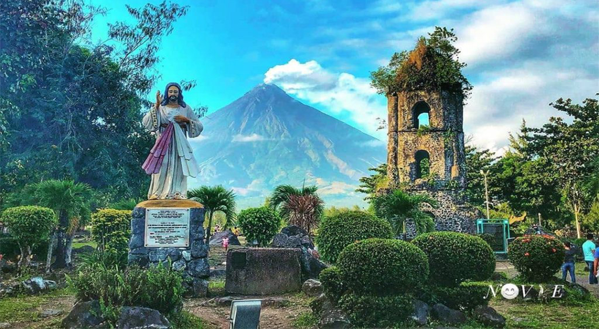
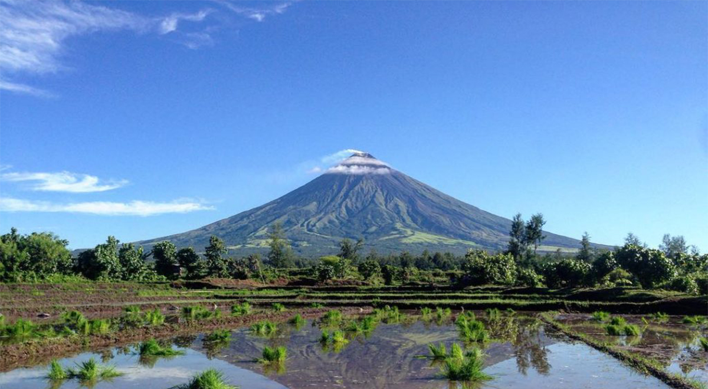
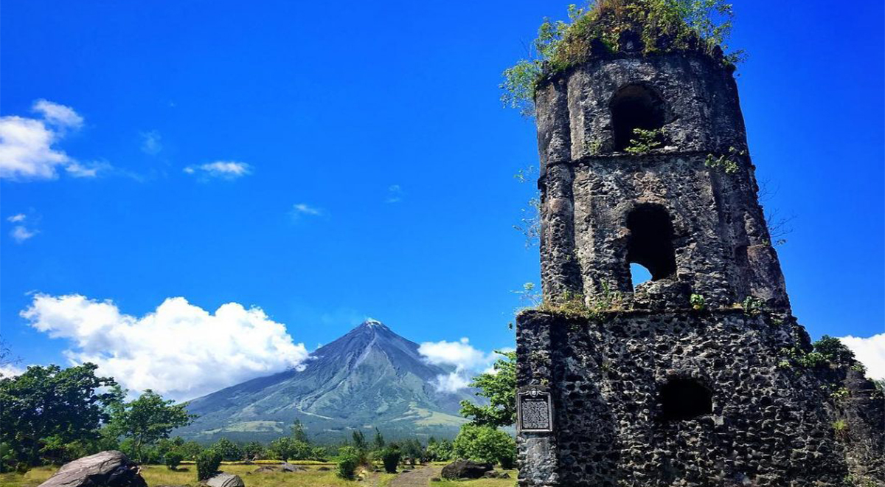

One of the most historical places in Albay is Cagsawa Ruins as it is a result of the most violent eruption of Mayon Volcano in recorded history. Thousands of people were killed in the disaster, including those who sought refuge in this stone church during the eruption that were engulfed by the fast-flowing volcanic matter. This belfry is all that remains of the town during that 1814 eruption. Now, it is among the most famous Daraga Albay tourist spots that never fails to amaze its visitors.
Daraga, 4501 AlbayHow to get there If you want to witness the stunning remains of the Cagsawa Church, here are some ways to reach Cagsawa Ruins Park. By bus The common and cheapest way to reach Bicol is by bus. From Manila or Cubao, ride a bus going to Legazpi. From the terminal in Legazpi, you can charter a van going to Cagsawa Ruins Park. This is perfect for those traveling on a budget. Travel time by bus is around 10-12 hours. By plane If you don’t have a lot of time to spare on the road, you can also take a plane ride going to Bico but it is more expensive. From Manila, there are regular flights to Legazpi City and it only takes 1 hour and 10 minutes.